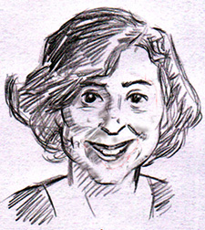

This is an archived copy of History Matters, provided by the Roy Rosenzweig Center for History and New Media. To explore this content in a new interface, visit Who Built America?.


Allyson M. Poska, Professor of History at the University of Mary Washington in Fredericksburg, Virginia, received her Ph.D. in history at the University of Minnesota in 1992, with an M.A. from Brown University, and a B.A. at Johns Hopkins University. Her specialties include womens history, colonial Latin American history, and the history of early modern Europe, especially early modern Spain. Her publications include Women and Authority in Early Modern Spain: The Peasants of Galicia, for which she won the Roland H. Bainton Book Prize in early modern history and theology; Regulating the People: The Catholic Reformation in Seventeenth-Century Spain; and Women and Gender in the Western Past, coauthored with Katherine French. She has served as editor of the Women and Gender in the Early Modern World monograph series with Ashgate Press. She received a National Endowment for the Humanities Fellowship for College Teachers and Independent Scholars for 2000–2001. She teaches courses in Western Civilization; Introduction to the Study of History; classes on the Renaissance, the Reformation, and the history of Spain; and seminars on topics such as daily life, gender, society, and development, and women, sex, and family.1. What drew you to teaching history? Were you drawn by the subject matter, by particular teachers, or something else?
I was an international affairs major and didnt even consider a career in history until I handed one of my history professors my law school recommendation forms. He and I had done an independent study together and were working on a potential publication. Working on the project was so exciting. He was enthusiastic and the material was cool. I learned that there was a whole world of thrilling ideas out there. He suggested that I not go to law school, but that I become a historian. It was like the clouds opening up and the angels singing!
In deciding to go to graduate school, I came to understand that history is the tool that I use to understand the world and that it is always exciting to think about learning more. I changed my mind that instant and never regretted a moment. I cant imagine doing anything else.
2. What courses have you taught?I started teaching in 1992 and have spent my entire career at Mary Washington. Over the years I have taught lots of classes, four each semester. I am both the early modern Europeanist and the Latin Americanist, and I teach some of both nearly every semester.
I regularly teach the first half of the Western Civilization survey, the history methods course, a two-semester survey of Latin America, and an array of classes on 16th- and 17th-century Europe. I also teach one advanced seminar each year, alternating European and Latin American topics.
3. Which are your favorite courses to teach? Why?My favorite classes to teach are the new ones that I develop around my current research projects. When I was working on a book on peasant religion, I taught a seminar on daily life in Early Modern Europe. As a part of the same interest that led to my womens history textbook, I began teaching Early Modern European Womens History. Last year, I taught a seminar on Gender and Empire as part of my preparation for a new book on Spanish emigration to the Americas. It is really energizing to learn new material along with my students. Although they may not know it, my students always help me think through my research questions and learn new historiographies.
4. What interests students most in your classes?Not surprisingly, my students interests span the spectrum; however, generally students are surprised to learn how much they like social history. They come to history believing that names and dates and wars are the centerpieces of historical study. It has never occurred to many of them that sex, food, relationships, and families were integral parts of the past as they are of the present. It takes them a while to realize that most people never fight in wars, negotiate treaties, or produce legislation. Although many students prefer more traditional approaches and topics, many who thought that history was boring take new interest once they realize how much historical study has to offer.
5. What are the biggest themes that you try to convey?In my Western Civilization survey, I emphasize the tensions between continuity and change in the development of the West. My course begins with early humans and finishes with the Protestant Reformation. The first half of the semester is really the parade of cultures: Greeks one week, Romans the next. In order to give students the opportunity to learn about those cultures from the inside out, I rely almost exclusively on full-text primary sources including Aristophaness Lysistrata and some of the Gnostic Gospels.
Primary sources are important, particularly when one is teaching cultures unlike our own, and I think that full-text sources immerse students in one authors vision of her/his culture in a way that shorter pieces do not. Moreover, analyzing these types of texts provides students with the skill to critically assess texts and images in our own culture.
Because the scope of the class is so large, I focus on five themes: Religion, Government and Leadership Characteristics, Gender, War, Daily Life, and Contact with Others. That way students know what to look for (broadly speaking) in the readings and know what class discussions and papers will focus on. I typically give two lectures each week and reserve one day for class discussion.
6. What is your most effective classroom activity?I think my most effective assignment is an exercise on the second day of class in Western Civilization. I divide the class into groups of five. On the screen, I put up the cover of the Grateful Deads Wake of the Flood album, with all kinds of ambiguous imagery. I ask students to talk for a few minutes together about what they see on the album cover. Then we have a class discussion about what they see and why they interpret each image that way.
This exercise has numerous benefits. First, it allows students to make personal connections from day one, hopefully tempering any fear of talking in front of their peers. Second, this exercise helps students realize that they know things about unfamiliar texts (or in this case, an image), and that they can use their own knowledge and experience as interpretive guides. Finally, students become familiar with the idea that there are many valid ways to interpret the same information.
7. What are your most important goals/aims in teaching the survey course? What do you most want your students to take away from a survey course with you?I want students to see the past as populated by ordinary people like themselves. Some of those people faced problems and had exciting moments similar to their own; others had experiences with which they can only try to empathize. Either way, they have access to the past and the past has connections to their lives.
8. How do you encourage class participation?The most important assignment is that every student must contribute to the class discussion of a primary source reading once each week. If you contribute, either with a question, an answer, or a comment, you get credit. If you dont talk, you get no credit. The value of that contribution is high. Class discussion is 30% of the total grade.
At first, some students balk, but with time, most learn that having completed even some of the assigned reading, they have something to say about the topic at hand. I believe that learning to interpret texts and communicate those interpretations is the most important skill we can offer our students. Moreover, participating in class discussion teaches them that most of learning about history is not being right or wrong, but about thinking, analyzing, and formulating your own ideas.
Finally, although few will use the reading or writing skills that are a part of history classes, most of them will have to speak in front of people in their post-college lives. Being comfortable articulating their ideas is a useful skill that students can take with them, even if they remember little or nothing about the rest of the material.
9. What is your most memorable teaching experience?I have had a couple of unexpected teaching moments that were almost tangential to the class, but critical learning moments nonetheless. The first was many years ago in the historical methods class. We all taught the same syllabus for the class and it required students to dress up for their final presentations. I told that class that they had to dress nicely, but not gender-specifically (men did not have to wear ties and women did not have to wear dresses).
Much to my surprise, I arrived on the final presentation day to find two of the young men in the class dressed in drag. They had not consulted one another. Listening to a presentation on Napoleon at Waterloo and a presentation on mining strikes in West Virginia by men dressed in womens clothing was quite an experience.
We all had a good laugh, but more importantly, we had a remarkable experience with gender expectations and how the classroom is often, by default, very traditionally gendered. My students had never considered how asking men to wear a tie and women to wear dresses made visible manifestations of masculinity and femininity a part of an assignment in which gender should not have been a factor.
I also had a terrific learning moment in a seminar on Women in Latin America. At the end of the semester, I have the students read a recent collection of fiction by Latina writers to discuss how the womens history has impacted the experience of Latinas in the present.
As it turned out, that year many of the writers in the collection were lesbians. Before class, the Latinas in my class all came to tell me that they didnt like the stories because, as they assured me, there were no gays or lesbians in Latin culture. They believed that homosexuality was an Anglo thing. They knew they were Latinas.
We then talked about how homosexuality was often not acknowledged in their community, a topic discussed by many of the writers. I asked whether any of them had an aunt or cousin or friend who had lived with the same woman for years as a roommate. However, when that aunt moved to Los Angeles, her roommate moved along her. Or, did any of them have an uncle who never married, but brought his same male friend to family events for decades.
With each new hypothetical example I offered, the students began to think of people in their families who fit the bill. One by one, they would say, no way! Uncle Ricardo and Michael!, or not Tia Susana and Laura! Suddenly, homosexuality was not just a fictional construct or the export of another culture, but something that they could consider as a possibility in their community and in their own families. This lesson was not the point of the class, but I know from later conversations with those same students that it was a transitional moment in some of their lives.
10. How has teaching changed over your career?When I was a new teacher, I was very concerned about what I perceived as conflicting demands of my students, my colleagues, my intellectual interests, and the discipline. Students expected to learn one type of history, my colleagues expected me to teach another, I was interested in yet another part of history, and (so I believed) the discipline expected me to bring key concepts to the classroom.
However, with time, I began to see that these different expectations were not as inflexible as I had imagined and that I was a better teacher when I taught my own topics and concepts. My passion was infectious. Students learned more and learned more easily.
Moreover, my colleagues were less interested in the details of my classes than I had imagined. By changing tactics, my students got a better education and my needs as a teacher and intellectual were better meshed.
11. What constitutes good teaching?Good teaching differs from person to person, but for me the best teaching happens when I am at a critical nexus with my students. At that moment I am able to work with my students as intellectuals and as people with a certain set of skills and experiences and at the same time encourage them to move beyond that place both socio/emotionally and intellectually. It is a hard place to find, but when I can help students move to a new point in their development, they learn the most, are most changed by what they learn, and find the process the most enjoyable.
12. Why do you think students often find history boring?I think that students are bored by history for a couple of reasons. First, for some students it is just not the best way for them to understand the world. They understand how the world works through religion, science, or philosophy. Or quite frankly, many people just are not interested in understanding how the world works.
As teachers, we should not be frustrated by that fact. We should just acknowledge those differences and make the class as interesting and as meaningful as possible for those students. Not everyone has to love history.
Second, students often see no relationship between their own lives and the past. Our cultures emphasis on the push forward towards a better, modern, or post-modern future makes history seem irrelevant to them. Although as scholars we learn from the past and make connections between the past and the present quite easily, we often need to be more assertive in providing those connections for students.
13. What tips would you give to a new history teacher?I would tell a new teacher to teach what she/he wants and loves, not what she/he thinks students should know or what his/her colleagues might want. When it comes to teaching, let your passions be your guide. Also, dont feel compelled to reinvent the wheel. Ask friends and colleagues for help with lectures and assignments. Such requests make the teaching process more collaborative and take away some of the stress of early semesters.
Interview conducted by Jenny Reeder; completed in March 2008.